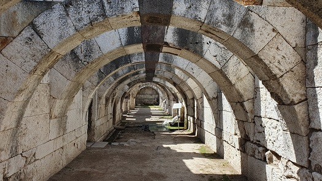
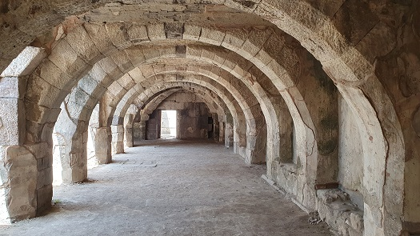
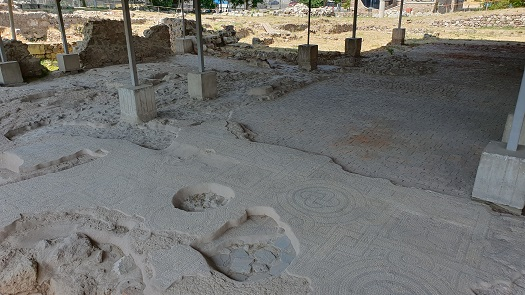
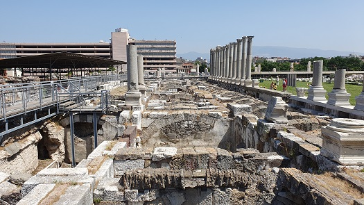
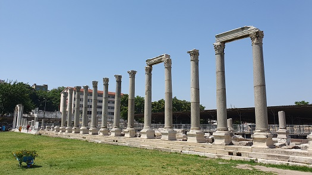
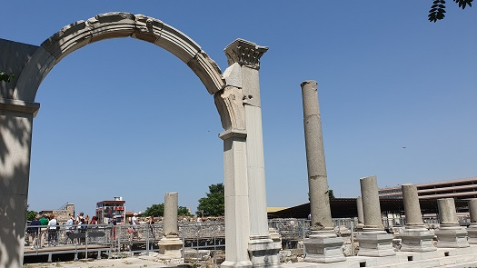
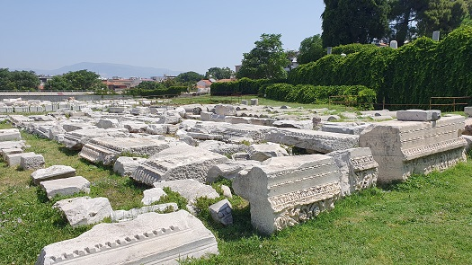
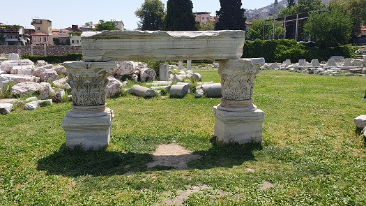
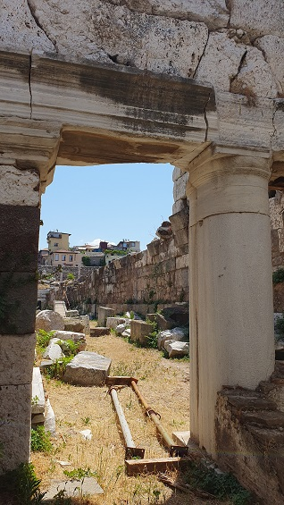

|
Visitamos Izmir en junio de 2024.
Izmir o Esmirna, ha
estado habitada desde hace 5000 años. Destacamos el Museo al aire libre
del Ágora, Ören Yeri.
El Ágora de Esmirna se estableció en la ladera norte de la colina de
Pagos (Kadifekale) en el siglo IV a.e.c. Se trata de un edificio
rectangular con un gran patio en el centro, rodeado de galerías con
columnas. Esta estructura sirvió como ágora estatal de la ciudad y
estaba rodeada de importantes edificios públicos de la época. El ágora
fue fundada durante el período helenístico.
Ciudad refundada por Alejandro Magno.
El ágora era una plaza con dos áreas comerciales y una basílica, lo que
podemos visitar hoy son los restos de la reconstrucción que hizo el
emperador Marco Aurelio tras el terremoto del año 178 que destruyó
completamente la ciudad.
La basílica está
situada en el ala norte del ágora y tiene una planta rectangular de
165x28m. Es la basílica romana más grande que se conoce. Las bóvedas de
crucería situadas en los extremos este y oeste del sótano se encuentran
entre los ejemplos más bellos de la arquitectura del período romano. En
la fachada norte de la basílica hay dos puertas monumentales, y la del
lado oeste está completamente expuesta en la actualidad. Las tiendas
abovedadas en la fachada norte de la basílica sugieren que durante las
etapas finales del período romano, el ágora estatal comenzó a tener una
función comercial. Se encontraron grafitis de la época romana en las
paredes enlucidas del sótano y en los pilares de los arcos.
La stoa occidental consta de galerías separadas por tres filas de
columnatas y, al igual que la basílica, está construida sobre un piso
subterráneo. Hoy en día, solo quedan los pisos arqueados del sótano. En
la antigüedad, la planta baja y el segundo piso, que tenían un piso de
madera, se utilizaban para pasear, brindando protección contra la lluvia
y el sol. Hacia el final de la época romana, se cerraron algunos muros
de las galerías del sótano y se construyeron aljibes.
El ágora está dividida en dos
partes iguales por una magnífica puerta situada en la intersección de la
calle. En el arco norte de la puerta, hay un relieve de Faustina, la
esposa del emperador romano Marco Aurelio.
La basílica como las zonas comerciales porticadas se construyeron sobre
una estructura de arcos resistente a los movimientos sísmicos y que hoy
se puede bajar a visitar. Recientes excavaciones han descubierto una
calle que llegaba al ágora directamente desde el puerto y que servía de
entrada de mercancías y viajeros a la ciudad. Hay que recordar que en
época greco-romana 400m separaban al ágora del puerto.
Bajo el pórtico oeste encontramos calles pavimentadas, con fuentes y un
eficaz sistema de drenaje que ha perdurado hasta hoy. También
encontraremos inscripciones griegas y romanas que conmemoran hechos
destacados como visitas de emperadores o celebraciones de juegos.
|
 |
 |
| |
|
| |
|
|
 |
 |
| |
|
|
 |
 |
| |
|
|
 |
 |

|